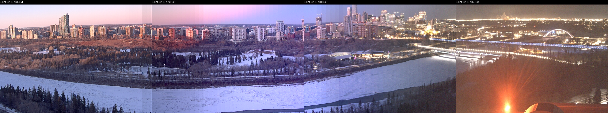

Tried to familiarise myself with pillow/PIL, a python library for manipulating images.
There are web cams on top of the Tory building, which give images updated every minute, like:
Inspired by

I tried the same thing with the Tory cam images:

Also something similar vertically, so time scale is in the sky: